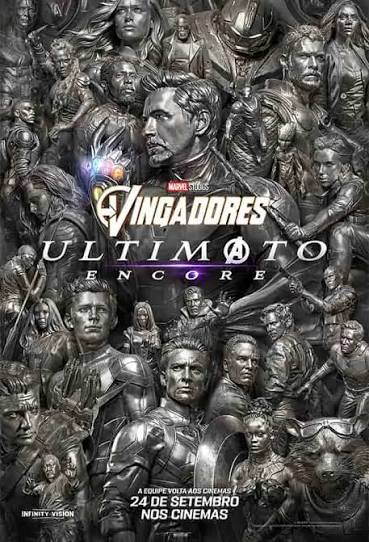

- Primeira formação: Homem de Ferro, Thor, Hulk, Homem-Formiga e Vespa se juntaram em Avengers #1 para derrotar ousadamente o deus trapaceiro Loki.
- Entrada do Capitão América: O Capitão América foi encontrado e integrado à equipe logo na edição número 4, tornando-se o líder clássico do grupo.
- Rotatividade: O grupo mudou de membros constantemente ao longo das décadas, acolhendo heróis como Feiticeira Escarlate, Visão, Gavião Arqueiro e Viúva Negra.
História dos Vingadores

Origem nos Quadrinhos (1963)
Atualmente
- O Retorno de Robert Downey Jr.: A maior novidade recente é a escalação do ator para retornar à franquia, mas não como Tony Stark. Ele interpretará o grande vilão Victor Von Doom.
- Os Próximos Filmes: O foco total da Fase 6 está na produção de Avengers: Doomsday (Vingadores: Doutor Destino) e do aguardado Avengers: Secret Wars (Vingadores: Guerras Secretas).
- Reset no Multiverso: Rumores de bastidores e declarações indicam que Guerras Secretas funcionará como uma "limpeza" na cronologia. O filme servirá para reorganizar o UCM e integrar de forma definitiva o Quarteto Fantástico e os X-Men ao mesmo universo fixo dos Vingadores..
Conheça melhor a História
- Curiosidades
Saiba mais sobre os Vingadores
A maior curiosidade de bilheteria é que Vingadores: Ultimato faturou quase 2,8 bilhões de dólares, tornando-se temporariamente a maior bilheteria da história do cinema.